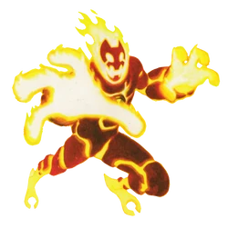
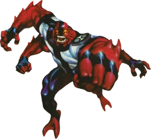
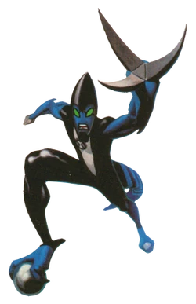
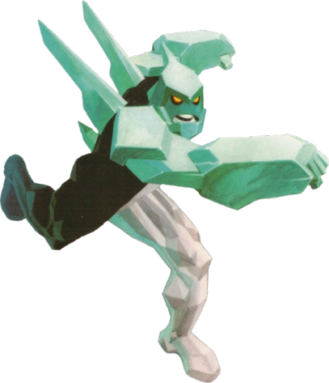
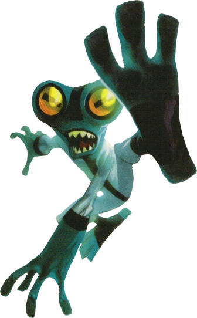
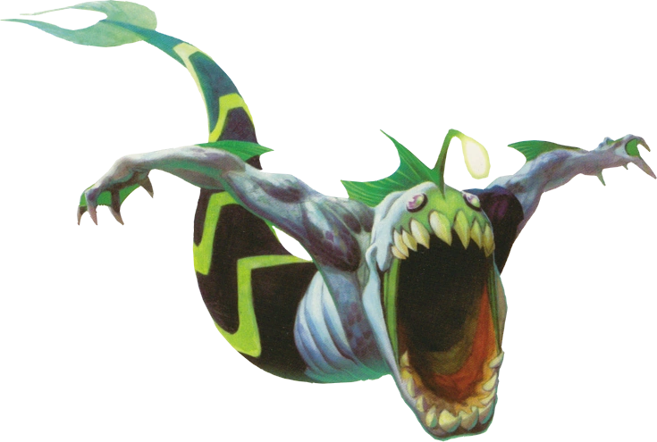
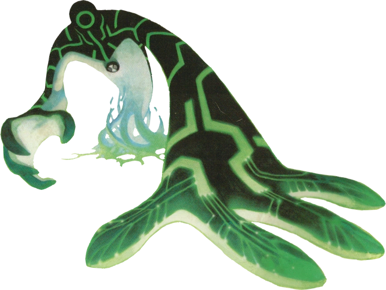
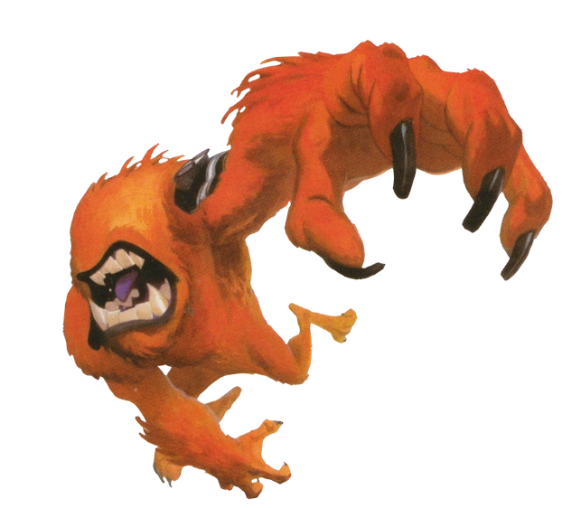
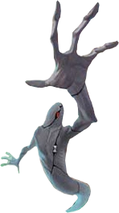
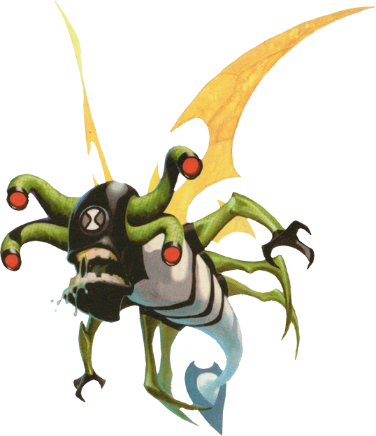

-
Chama

O Chama é um alienígena da espécie Pyronita (do sol de Pyros) com um visual feito de rochas magmáticas escuras que cobrem um corpo de fogo vivo e brilhante. Seu poder central é a pirocinese, que o permite projetar e moldar rajadas de fogo devastadoras, absorver calor, criar ondas de fogo para voar sobre pranchas de rocha e até causar pequenas erupções vulcânicas. Wiki aqui -
Quatro Braços

Pertencente à espécie Tetramando (originária do planeta desértico Khoros), este alienígena se destaca visualmente por sua constituição massiva, pele vermelha e, como o próprio nome indica, dois pares de braços extremamente fortes. Anatomia que também inclui quatro olhos, proporcionando-lhe uma excelente percepção de combate. Para mais informações, vá para Wiki aqui -
XlR8

O XLR8 é um alienígena da espécie Kinecelerano (do planeta Kinet) com visual aerodinâmico que lembra um dinossauro bípede azul e preto, equipado com pés de rodas e um capacete com viseira protetora. Seu poder central é a velocidade sobre-humana, que ultrapassa os 800 km/h, permitindo-lhe correr sobre a água, subir paredes, desviar de projéteis e criar tornados ao correr em círculos, além de desferir golpes rápidos com suas garras afiadas. Como características e limitações, possui um metabolismo hiperativo e impaciente, mas carece de força física bruta e perde totalmente a tração em superfícies escorregadias ou grudentas, como gelo e lama. Wiki aqui -
Diamante

O Diamante é um alienígena da espécie Petrosapia (do planeta Petropia) com um visual imponente feito de cristal verde-claro ultra-resistente, possuindo lâminas afiadas nas costas e uma constituição robusta. Seu poder central é a manipulação de cristais, permitindo que ele mude a forma do próprio corpo para criar lâminas e maças em suas mãos, dispare estilhaços de diamante como projéteis e invoque gigantescas barreiras ou rampas cristalinas do chão. Wiki aqui -
Massa Cinzenta

O Massa Cinzenta é um alienígena da espécie Galvaniano (do planeta Galvan Prime) com um visual bípede minúsculo, pele cinzenta, grandes olhos verdes e apenas cerca de 12 centímetros de altura. Seu poder central é a inteligência sobre-humana, que lhe confere um conhecimento científico genial e instantâneo sobre qualquer máquina, permitindo-lhe consertar, hackear ou construir dispositivos complexos a partir de sucatas em poucos segundos. Wiki aqui -
Aquático

O Aquático é um alienígena da espécie Pisccis Volann (do planeta aquático Pisccis) com um visual que mistura traços de tubarão e peixe-pescador, possuindo garras afiadas, uma cauda que se transforma em pernas em terra firme e uma lanterna luminescente na cabeça. Seu poder central é a adaptação subaquática perfeita, que o permite nadar em altíssimas velocidades, respirar debaixo d'água e resistir à extrema pressão do oceano, além de possuir uma mandíbula devastadora capaz de triturar aço com facilidade Wiki aqui -
Ultra T

O Ultra T é um alienígena da espécie Mecamorfo Galvânico (criado artificialmente na lua Galvan B) com um visual biomecânico feito de metal líquido preto e verde, olhos em forma de circuito e um corpo maleável. Seu poder central é a fusão e aprimoramento tecnológico, permitindo que ele se "instale" em qualquer máquina ou veículo para controlá-lo, modificando sua estrutura para criar armas ultra-avançadas e lasers potentes. Wiki aqui -
Besta

O Besta é um alienígena da espécie Vulpimancer (do planeta Vulpin) com um visual de fera quadrúpede e cega, coberto por pelos alaranjados, com dentes afiados, garras longas e sem nenhum traço facial visível além de brânquias em seu pescoço. Seu poder central é o sentido sensorial sobre-humano, utilizando a termografia e uma audição e olfato extremamente aguçados para mapear o ambiente ao seu redor em um "radar em 3D" perfeito, o que o torna um rastreador impecável. Wiki aqui -
Fantasmático

O Fantasmático é um alienígena da espécie Ectonurita (do sistema estelar de Anur Phaetos) com o visual de um fantasma cinzento de um só olho, envolto por uma pele protetora rasgada e cheia de listras pretas. Seus poderes centrais são a intangibilidade e a invisibilidade, que o permitem atravessar paredes sólidas, ficar completamente invisível e voar livremente, além de possuir a habilidade de possuir e controlar o corpo de outras pessoas. Wiki aqui -
Insectóide

O Insectoide é um alienígena da espécie Lepidopterrano (do planeta Lepidopterra) com o visual de um inseto voador gigante, possuindo quatro olhos articulados nas laterais da cabeça, asas delgadas, pernas afiadas e uma cauda pontiaguda que serve como uma lâmina. Seu poder central é a geração de fluidos corporais, permitindo-lhe cuspir fluxos de uma gosma extremamente pegajosa ou um lodo inflamável, além de possuir uma capacidade de voo altamente ágil e rápida. Wiki aqui